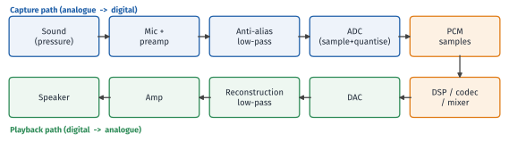
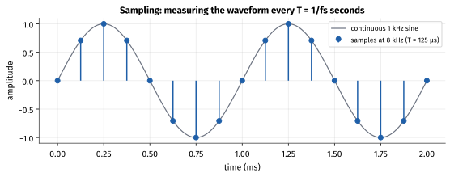
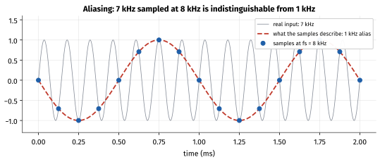
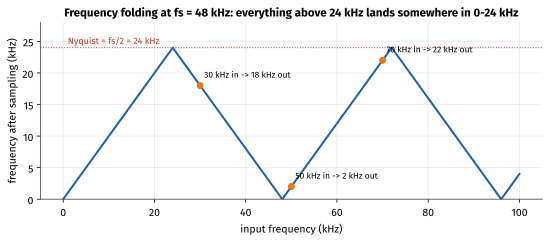
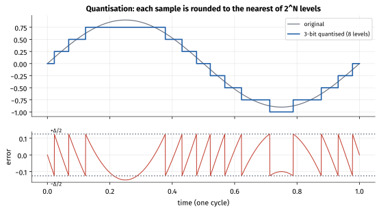
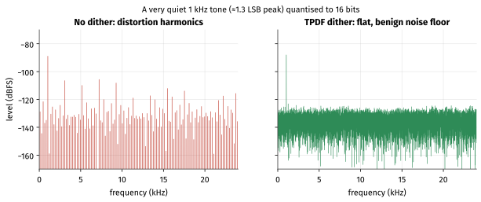
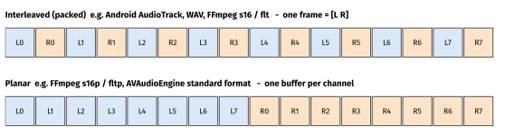
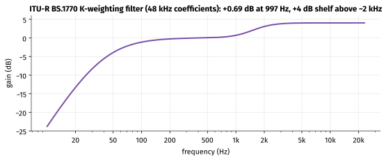

How to use this guide
This is the in-depth companion to section 1.1 Digital Audio Basics of the tutorial. The tutorial gives you the headline facts; this guide derives them, shows the numbers, and gives you experiments that prove each idea on your own machine and phone.
| Session | Suggested activity | Time |
|---|---|---|
| 1 | Read sections 1–3 (signal chain, sampling, aliasing). Do Exercise A. | 2 h |
| 2 | Read sections 4–5 (quantisation, dither, PCM layout). Do Exercises B and C. | 2 h |
| 3 | Read sections 6–7 (data rates, buffers, loudness). Do Exercise D. | 2 h |
| 4 | Device lab: Exercises E and F on your Android phone (and an iPhone if you have one). | 2 h |
| 5 | Self-test without notes, then check the answer key. Write up your "media facts" notebook page. | 1–2 h |
Learning objectives. By the end of the week you should be able to:
- Explain what sampling does to a signal and why the Nyquist frequency is a hard limit.
- Predict the alias frequency of any tone sampled at any rate.
- Derive the "6 dB per bit" rule and the dynamic range of 16- and 24-bit PCM.
- Explain why dither is added and why audio engines work in 32-bit float.
- Lay out PCM in memory (interleaved vs planar, frames vs samples, byte order) and read a WAV header by hand.
- Compute raw data rates, buffer sizes and buffer latencies.
- Explain LUFS/LKFS, true peak and why loudness normalisation matters to an app.
Tools you need. FFmpeg 6 or later (ffmpeg, ffprobe; the expected outputs below were produced with FFmpeg 7.1), Python 3 with NumPy (optional, for analysis), Android Studio with a physical phone and adb, and optionally Audacity for listening and viewing spectra.
1. From pressure wave to numbers: the audio signal chain
Sound is a longitudinal pressure wave: tiny fluctuations of air pressure around atmospheric pressure. A microphone turns those fluctuations into a small voltage that follows the pressure over time — an analogue signal, continuous in both time and amplitude.
To store or process it in a computer we must make it discrete in two dimensions:
- Time — we measure the voltage at regular instants. This is sampling, and the number of measurements per second is the sample rate fs.
- Amplitude — each measurement is rounded to one of a finite set of integer levels. This is quantisation, and the number of bits per measurement is the bit depth.
The result is PCM (pulse-code modulation): a plain sequence of integers (or floats), one per channel per sampling instant. Every other audio format you will meet — WAV, AAC, Opus, FLAC — is either PCM in a container or a compressed representation that decodes back to PCM.

On a phone, the analogue parts (microphone, preamp, ADC, DAC, amplifier) live in the audio codec chip or the SoC's audio subsystem. The digital part is shared between a DSP (for voice processing, effects, offload playback), the kernel driver (ALSA/ASoC on Android) and user-space services (AudioFlinger on Android, Core Audio on iOS). You will study that path in Phase 5; this week is about the numbers that flow through it.
Two meanings of codec
In hardware, an audio codec is the chip containing the ADC and DAC (coder/decoder of analogue signals). In software, a codec compresses PCM (AAC, Opus). Context tells you which one is meant.
2. Sampling and the Nyquist–Shannon theorem
2.1 What sampling does
If the sample rate is fs, the sample period is T = 1/fs. At 48 kHz, T = 1/48 000 s ≈ 20.83 µs. Sample number n is the signal's value at time t = n·T.

2.2 The theorem
The Nyquist–Shannon sampling theorem says: a signal containing no frequencies at or above fs/2 is completely determined by its samples, and can be reconstructed exactly by an ideal low-pass filter. The frequency fs/2 is the Nyquist frequency.
Two consequences are worth internalising:
- "Exactly" really means exactly. The samples do not describe a staircase. Between samples, the reconstruction filter produces the one and only band-limited waveform that passes through those points. Staircase pictures are a drawing convenience, not what a DAC outputs.
- More samples do not make a band-limited signal "smoother". Sampling a 1 kHz tone at 192 kHz instead of 48 kHz does not improve the tone; it only raises the ceiling on which frequencies can be represented.
2.3 Why 44.1 kHz and 48 kHz?
Human hearing extends to roughly 20 kHz (less with age). A sample rate a little above 40 kHz therefore suffices, with the extra margin used for the anti-aliasing filter's transition band — the range in which the filter goes from "pass everything" to "block everything".
- 44.1 kHz leaves a transition band from 20 kHz to 22.05 kHz, only 2.05 kHz wide. The number has a historical origin: early digital audio was recorded on video tape using PCM adaptors that stored 3 samples per video line. With 245 usable lines × 60 fields/s (NTSC-style) or 294 lines × 50 fields/s (PAL-style), both give 3 × 245 × 60 = 3 × 294 × 50 = 44 100 samples/s, and the CD inherited it.
- 48 kHz gives a roomier 4 kHz transition band, and it divides neatly into video frame rates: 48 000 / 25 = 1920 samples per frame at 25 fps, 48 000 / 50 = 960, 48 000 / 30 = 1600. (At 30000/1001 fps it is 1601.6 samples per frame, so 5 frames hold exactly 8008 samples.) It is the standard for video, broadcast and — importantly for you — the native rate of most phone audio hardware.
| Sample rate | Nyquist | Typical use |
|---|---|---|
| 8 kHz | 4 kHz | Narrowband telephony (G.711, AMR-NB): speech band ≈ 300–3400 Hz |
| 16 kHz | 8 kHz | Wideband voice (AMR-WB, VoIP), speech recognition |
| 32 kHz | 16 kHz | Super-wideband voice (e.g. EVS SWB), some broadcast |
| 44.1 kHz | 22.05 kHz | CD, most music catalogues |
| 48 kHz | 24 kHz | Video, broadcast, native rate of most Android and iOS audio paths |
| 96 / 192 kHz | 48 / 96 kHz | Production headroom for processing; rarely audible benefit for playback |
2.4 Resampling on mobile
When an app plays 44.1 kHz content on a device whose hardware runs at 48 kHz, something must resample (sample-rate convert) it. On Android, AudioFlinger's mixer does this in software (unless the stream is offloaded to a DSP or played through a path that runs at the content rate). Resampling costs CPU and power, adds a little latency, and the quality depends on the resampler. More importantly for low-latency apps, Android's fast mixer path requires the track to use the device's native sample rate and buffer size, so mismatched rates can push you onto a slower path.
On iOS the hardware rate is exposed through AVAudioSession.sharedInstance().sampleRate; you can request a rate with setPreferredSampleRate(_:), and Core Audio converts as needed.
Rule of thumb
For anything real-time (games, instruments, calls), generate and process audio at the device's native rate — query it, don't assume it. For music playback, letting the platform resample is fine.
3. Aliasing: what happens above Nyquist
3.1 The folding rule
Suppose a 7 kHz tone is sampled at 8 kHz. The samples it produces are identical to the samples of a 1 kHz tone (with inverted sign). Once the samples are taken, nothing can tell the two apart; the 7 kHz tone has been aliased to 1 kHz.

Why? A sampled sinusoid is sin(2π·f·n/fs). Adding any integer multiple of fs to f adds a multiple of 2π·n to the phase, which changes nothing. So frequencies f, f ± fs, f ± 2fs, … are indistinguishable, and negative frequencies mirror positive ones. That gives the folding rule:
falias = | f − k·fs |, choosing the integer k that makes the result lie in [0, fs/2]

Worked example — predicting aliases
- 30 kHz sampled at 48 kHz: k = 1 → |30 − 48| = 18 kHz.
- 25 kHz sampled at 44.1 kHz: k = 1 → |25 − 44.1| = 19.1 kHz — right in the audible band.
- 50 kHz at 48 kHz: k = 1 → |50 − 48| = 2 kHz.
- 70 kHz at 48 kHz: k = 1 → |70 − 48| = 22 kHz (k = 2 would give 26, which is above Nyquist, so k = 1 is right).
- 5 kHz at 8 kHz (a telephone codec): |5 − 8| = 3 kHz — a whistle that was never in the speech band.
3.2 Why this matters in practice
Aliases are not harmonically related to the original sound, so they sound harsh and "inharmonic". Real systems prevent them in three places:
- Before the ADC: an analogue anti-aliasing low-pass filter. Modern converters are oversampling sigma-delta designs: they sample at many MHz with a gentle analogue filter, then use a steep digital filter before decimating to 48 kHz.
- Inside resamplers: a proper sample-rate converter low-pass filters before it decimates. A naive one that just drops samples aliases badly.
- Inside synthesis and effects: generating a sawtooth or square wave naively, or applying distortion, creates harmonics above Nyquist that fold down. Audio engines use band-limited oscillators and oversampling for non-linear effects.
You will hear and measure this in Exercise A.
4. Quantisation, bit depth and dynamic range
4.1 Levels and step size
With N bits there are 2N levels. Signed 16-bit PCM uses integers from −32 768 to +32 767. If full scale is ±1.0, the step size (one LSB, least significant bit) is Δ = 2/2N. Rounding each sample to the nearest level makes an error between −Δ/2 and +Δ/2.

4.2 Deriving "6 dB per bit"
For a busy signal the error behaves like random noise uniformly distributed over [−Δ/2, +Δ/2]. Its mean-square value is Δ²/12. A full-scale sine wave of amplitude A = 2N−1·Δ has mean-square value A²/2. The signal-to-quantisation-noise ratio is therefore:
SQNR = 10·log10( (A²/2) / (Δ²/12) ) = 10·log10(1.5 · 22N) ≈ 6.02·N + 1.76 dB
Each extra bit doubles the number of levels, halves Δ, and improves the ratio by 20·log10(2) ≈ 6.02 dB. The 1.76 dB term is specific to a sine-wave signal; many texts drop it and quote 6.02·N, which is why you will see 16-bit quoted as both "96 dB" and "98 dB".
| Bit depth | Levels | 6.02·N (dB) | 6.02·N + 1.76 (dB) | Where you meet it |
|---|---|---|---|---|
| 8 | 256 | 48.2 | 49.9 | Legacy/low-end, ENCODING_PCM_8BIT, G.711 is 8-bit companded |
| 12 | 4096 | 72.2 | 74.0 | Some voice paths |
| 16 | 65 536 | 96.3 | 98.1 | CD, most app audio, ENCODING_PCM_16BIT |
| 20 | 1 048 576 | 120.4 | 122.2 | Approximately the real-world limit of excellent converters |
| 24 | 16 777 216 | 144.5 | 146.2 | Studio and capture formats; real ADCs reach roughly 110–120 dB |
I simulated a full-scale 997 Hz sine quantised to 16 bits in NumPy and measured an SQNR of 98.07 dB, and 49.95 dB for 8 bits — matching the formula.
dBFS
Digital levels are given in dBFS (decibels relative to full scale). 0 dBFS is the largest possible sample magnitude; everything else is negative. A sine with peak amplitude 0.5 has a peak of −6.02 dBFS and an RMS level of −9.03 dBFS (RMS of a sine is peak/√2, i.e. 3.01 dB lower). FFmpeg's astats filter reports exactly these numbers — see Exercise B.
4.3 Integer vs floating-point samples
Audio engines (AAudio/Oboe callbacks, AudioFlinger's mixer, AVAudioEngine, FFmpeg filters) commonly use 32-bit float samples, nominally in [−1.0, +1.0]. Float has a 24-bit mantissa, so precision near full scale is similar to 24-bit integer, but it also has an exponent: a float sample can go to +4.0 or −12.0 in the middle of a processing chain without being destroyed. Mixing two full-scale tracks in 16-bit integer clips (values wrap or saturate); in float they simply sum to 2.0, and a later gain stage or limiter can bring them back. Clipping only happens when you finally convert to an integer format for the DAC.
Common conversions:
- s16 → float:
f = s / 32768.0f - float → s16:
s = clamp(round(f * 32767), −32768, 32767)(conventions differ slightly between libraries; the ±1 LSB asymmetry rarely matters) - s24 in 32-bit containers: often left-justified ("MSB-aligned"), so a full-scale value looks like a 32-bit full-scale value; check the format definition.
| Format | Android AudioFormat encoding |
FFmpeg sample_fmt |
Notes |
|---|---|---|---|
| unsigned 8-bit | ENCODING_PCM_8BIT |
u8 |
Silence is 128, not 0 |
| signed 16-bit | ENCODING_PCM_16BIT |
s16 / s16p |
The default for app audio |
| packed 24-bit (3 bytes) | ENCODING_PCM_24BIT_PACKED (API 31+) |
(via s32 in FFmpeg) |
Used by some USB devices and files |
| signed 32-bit | ENCODING_PCM_32BIT (API 31+) |
s32 / s32p |
|
| 32-bit float | ENCODING_PCM_FLOAT (API 21+) |
flt / fltp |
Engine-internal format; AAudio supports it |
4.4 Dither
Quantisation error is only noise-like when the signal is busy. For a very quiet or slowly changing signal, the error becomes correlated with the signal — it repeats every cycle and produces harmonic distortion, and fades to digital silence can "pump" or crackle.
Dither adds a tiny amount of random noise before rounding. With TPDF (triangular probability density) dither of ±1 LSB peak, the error becomes statistically independent of the signal: you trade distortion for a slightly higher, constant, benign noise floor. Some dither implementations also apply noise shaping, pushing the noise toward frequencies where the ear is less sensitive.

When to dither: every time you reduce bit depth (e.g. a float mix to a 16-bit file). When not to: never dither twice in a chain unnecessarily, and do not dither when converting a format losslessly (s16 → float → s16 with no processing is bit-exact without dither).
5. Channels and PCM memory layout
5.1 Channel counts and layouts
Mono (1), stereo (2), 5.1 (6: front left, front right, centre, LFE, and two surround), 7.1 (8) and immersive layouts such as 7.1.4 (12, with four height channels). The order of channels inside a frame is defined by the API or format, and different systems use different orders — a common source of "the dialogue comes out of the rear speaker" bugs.
- Android describes layouts with channel masks:
AudioFormat.CHANNEL_OUT_MONO,CHANNEL_OUT_STEREO,CHANNEL_OUT_5POINT1,CHANNEL_OUT_7POINT1_SURROUND, and (API 32+)CHANNEL_OUT_7POINT1POINT4. Input masks are separate (CHANNEL_IN_MONO,CHANNEL_IN_STEREO). - FFmpeg uses named layouts (
mono,stereo,5.1,7.1, …) — runffmpeg -layoutsto list them with their channel order. - WAV files with more than two channels use
WAVE_FORMAT_EXTENSIBLE, which carries a speaker mask; plain PCM WAV (format tag 1) has no mask, which is whyffprobereportschannel_layout=unknownfor some WAV files.
5.2 Samples, frames and buffers
Terminology varies, so be precise:
- A sample is one value for one channel at one instant.
- An audio frame (in PCM APIs such as AAudio, AudioTrack, ALSA and Core Audio) is one sample for every channel at one instant. Stereo 16-bit: 1 frame = 2 samples = 4 bytes.
- A codec frame is a unit of compressed audio. AAC-LC frames carry 1024 samples per channel (21.33 ms at 48 kHz); MP3 frames 1152; Opus frames 2.5–60 ms (20 ms is typical). Different concept, same word.
bytes per frame = channels × bytes per sample | duration = frames ÷ fs
5.3 Interleaved vs planar

- Interleaved (packed): one buffer, channels alternating. Used by
AudioTrack,AudioRecord, AAudio/Oboe, WAV files, and FFmpeg'ss16/fltformats. - Planar: one buffer per channel. FFmpeg's decoders often output planar formats (
fltpfor AAC and Opus), andAVAudioEngine's standard format (AVAudioFormat(standardFormatWithSampleRate:channels:)) is deinterleaved 32-bit float.
Converting between them is a simple loop, but feeding planar data to an API that expects interleaved data gives a recognisable symptom: audio that plays at the right speed but sounds garbled, or plays the first half of the buffer in one ear.
5.4 Byte order and the WAV header
PCM in WAV is little-endian: the 16-bit value 0x1234 is stored as bytes 34 12. A canonical PCM WAV file is a RIFF container with a 44-byte header followed by raw interleaved samples:
| Offset | Size | Field | Value for 48 kHz / 16-bit / stereo |
|---|---|---|---|
| 0 | 4 | "RIFF" | 52 49 46 46 |
| 4 | 4 | file size − 8 | little-endian |
| 8 | 4 | "WAVE" | 57 41 56 45 |
| 12 | 4 | "fmt " | 66 6d 74 20 |
| 16 | 4 | fmt chunk size | 16 |
| 20 | 2 | audio format | 1 = PCM (3 = IEEE float, 0xFFFE = extensible) |
| 22 | 2 | channels | 2 |
| 24 | 4 | sample rate | 48 000 = 80 bb 00 00 |
| 28 | 4 | byte rate = fs × channels × bytes/sample | 192 000 = 00 ee 02 00 |
| 32 | 2 | block align = channels × bytes/sample | 4 |
| 34 | 2 | bits per sample | 16 |
| 36 | 4 | "data" | 64 61 74 61 |
| 40 | 4 | data size in bytes |
You will decode a real header byte-by-byte in Exercise C.
6. Data rates, storage, buffers and latency
6.1 Raw PCM data rate
bit rate = fs × bits per sample × channels
| Format | Calculation | Bit rate | Per minute |
|---|---|---|---|
| Telephone 8 kHz / 8-bit / mono | 8 000 × 8 × 1 | 64 kbit/s | 480 kB |
| Wideband 16 kHz / 16-bit / mono | 16 000 × 16 × 1 | 256 kbit/s | 1.92 MB |
| CD 44.1 kHz / 16-bit / stereo | 44 100 × 16 × 2 | 1 411.2 kbit/s | 10.58 MB |
| Mobile 48 kHz / 16-bit / stereo | 48 000 × 16 × 2 | 1 536 kbit/s | 11.52 MB |
| 48 kHz / 32-bit float / stereo | 48 000 × 32 × 2 | 3 072 kbit/s | 23.04 MB |
| 48 kHz / 24-bit / 5.1 | 48 000 × 24 × 6 | 6 912 kbit/s | 51.84 MB |
(1 MB = 106 bytes here. G.711 telephony is exactly the first row: 64 kbit/s is the classic "DS0" telephone channel.)
Worked example — compression ratio
48 kHz / 16-bit stereo is 1 536 kbit/s. AAC-LC at 128 kbit/s is 1536 / 128 = 12× smaller. Opus at 64 kbit/s is 24× smaller. A 10-second stereo WAV at this format is 48 000 × 4 × 10 = 1 920 000 bytes of samples plus a 44-byte header = 1 920 044 bytes — exactly the size you will see in Exercise B.
6.2 Buffers and latency
Audio is moved in buffers (also called periods or bursts). A buffer of F frames at rate fs lasts F/fs seconds, and the system must refill it in less time than that, every time, forever — a missed deadline is an audible glitch (underrun).
| Buffer (frames) | Duration at 48 kHz | Typical context |
|---|---|---|
| 48 | 1 ms | Very aggressive low-latency (MMAP paths) |
| 96 | 2 ms | Low-latency burst on some Android devices |
| 192 | 4 ms | Common Android burst size |
| 240 | 5 ms | Common burst size |
| 1024 | 21.3 ms | Typical "normal" mixer buffer / one AAC frame |
| 4096 | 85.3 ms | Power-efficient or offload playback |
Total output latency is the sum of all buffering stages (app buffer + mixer + HAL/DSP + DAC filters), so it is usually several bursts. Small buffers mean low latency but more wake-ups and more risk of glitches; large buffers save power. Phase 4 (Oboe, AVAudioEngine) returns to this trade-off.
On Android, ask the platform for the native values:
val am = context.getSystemService(Context.AUDIO_SERVICE) as AudioManager
val nativeRate = am.getProperty(AudioManager.PROPERTY_OUTPUT_SAMPLE_RATE)?.toIntOrNull() ?: 48_000
val framesPerBurst = am.getProperty(AudioManager.PROPERTY_OUTPUT_FRAMES_PER_BUFFER)?.toIntOrNull() ?: 256
val burstMs = 1000.0 * framesPerBurst / nativeRate
Log.i("AudioFacts", "native rate=$nativeRate Hz, burst=$framesPerBurst frames (${"%.2f".format(burstMs)} ms)")
On iOS:
let session = AVAudioSession.sharedInstance()
try session.setCategory(.playback)
try session.setPreferredIOBufferDuration(0.005) // a request, not a guarantee
try session.setActive(true)
print("rate=\(session.sampleRate) Hz, IO buffer=\(session.ioBufferDuration * 1000) ms")
7. Loudness
7.1 Peak, RMS and perceived loudness
- Peak level (dBFS) is the largest sample magnitude. It tells you about clipping, not about loudness.
- RMS level is the root-mean-square power. Closer to loudness, but the ear is not equally sensitive at all frequencies: a bass-heavy and a treble-heavy track with equal RMS do not sound equally loud.
- Loudness per ITU-R BS.1770 (units LUFS, Loudness Units relative to Full Scale; LKFS is the same unit under another name) first applies a K-weighting filter — a high-pass that de-emphasises deep bass plus a high-frequency shelf that models the head's acoustic effect — then measures power, then applies gating.

LK = −0.691 + 10·log10( Σi Gi · zi ) LUFS
where zi is the mean square of the K-weighted signal in channel i and Gi is a channel weight (1.0 for left, right and centre; about 1.41, i.e. +1.5 dB, for surround channels; the LFE channel is excluded).
Integrated loudness uses 400 ms blocks with 75% overlap and two gates: blocks quieter than −70 LUFS are ignored (absolute gate), then blocks more than 10 LU below the resulting average are ignored (relative gate), so silence and quiet passages do not drag the figure down. Momentary (400 ms) and short-term (3 s) loudness are the live-meter versions. Loudness range (LRA) describes how much the loudness varies. True peak (dBTP) estimates the peak of the reconstructed analogue waveform by oversampling, because the waveform between samples can exceed the largest sample — which can clip a DAC or a later lossy encoder.
Worked example — a sine wave's loudness
A 997 Hz sine at −20 dBFS peak in both channels: each channel has mean square (0.1)²/2 = 0.005; K-weighting adds +0.691 dB at 997 Hz, which the −0.691 constant cancels. L = 10·log10(0.005 + 0.005) = −20.0 LUFS. FFmpeg's ebur128 filter reports exactly −20.0 LUFS for this signal (see Exercise D).
7.2 Targets you will meet
| Context | Typical target | Source |
|---|---|---|
| European broadcast | −23 LUFS integrated, ≤ −1 dBTP | EBU R 128 |
| US broadcast | −24 LKFS | ATSC A/85 |
| Music streaming | commonly about −14 LUFS (Spotify, YouTube) to −16 LUFS (Apple Music) | Service documentation; values change over time |
| Podcasts | commonly −16 LUFS (stereo) | Common industry recommendation |
Why an app developer cares: if your app plays user-generated or downloaded content without normalisation, levels will vary wildly between items and relative to other apps. Options include normalising at encode time (FFmpeg loudnorm), storing loudness metadata and applying gain at playback, or relying on codec metadata. Android 15 added LoudnessCodecController, which applies loudness metadata from AAC/MPEG-D DRC streams via the decoder (CTA-2075). Android also offers DynamicsProcessing (API 28) and LoudnessEnhancer audio effects.
8. Mobile platform notes
| Concern | Android | iOS |
|---|---|---|
| Simple PCM playback | AudioTrack (interleaved; 16-bit or float) |
AVAudioPlayerNode in AVAudioEngine, or AVAudioPlayer for files |
| Simple capture | AudioRecord |
AVAudioEngine input node, AVAudioRecorder |
| Low latency | AAudio (C, API 26+) and Oboe (C++ wrapper) | Audio Units / AVAudioEngine with small IO buffer |
| Native rate / buffer | AudioManager.getProperty(PROPERTY_OUTPUT_SAMPLE_RATE / _FRAMES_PER_BUFFER) |
AVAudioSession.sampleRate, ioBufferDuration |
| Engine sample format | float in AAudio callbacks (or int16) | deinterleaved Float32 standard format |
| System mixer | AudioFlinger (in audioserver) |
Core Audio / audio server |
| Inspect at runtime | adb shell dumpsys media.audio_flinger |
Xcode / Instruments; AVAudioSession properties |
A minimal, correct AudioTrack set-up for interleaved 16-bit stereo at 48 kHz:
val sampleRate = 48_000
val channelMask = AudioFormat.CHANNEL_OUT_STEREO
val encoding = AudioFormat.ENCODING_PCM_16BIT
val minBuf = AudioTrack.getMinBufferSize(sampleRate, channelMask, encoding)
val track = AudioTrack.Builder()
.setAudioAttributes(
AudioAttributes.Builder()
.setUsage(AudioAttributes.USAGE_MEDIA)
.setContentType(AudioAttributes.CONTENT_TYPE_MUSIC)
.build()
)
.setAudioFormat(
AudioFormat.Builder()
.setSampleRate(sampleRate)
.setChannelMask(channelMask)
.setEncoding(encoding)
.build()
)
.setBufferSizeInBytes(minBuf * 2)
.setTransferMode(AudioTrack.MODE_STREAM)
.build()
/** One second of a stereo sine, interleaved L R L R …, amplitude 0.5 (−6 dBFS peak). */
fun stereoSine(freqHz: Double, seconds: Double, amp: Double = 0.5): ShortArray {
val frames = (sampleRate * seconds).toInt()
val out = ShortArray(frames * 2)
for (n in 0 until frames) {
val v = (amp * sin(2 * PI * freqHz * n / sampleRate) * 32767).roundToInt().toShort()
out[2 * n] = v // left
out[2 * n + 1] = v // right
}
return out
}
// Call from a background thread: write() blocks in MODE_STREAM.
track.play()
val pcm = stereoSine(1000.0, 1.0)
track.write(pcm, 0, pcm.size) // size is in shorts (samples), not frames or bytes
track.stop(); track.release()
(Imports: android.media.*, kotlin.math.PI, kotlin.math.sin, kotlin.math.roundToInt.)
Units in audio APIs
AudioTrack.write(ShortArray, …) counts shorts, the ByteArray overload counts bytes, getMinBufferSize() returns bytes, AAudio and Oboe count frames, and AudioTrack.getPlaybackHeadPosition() returns frames. Mixing these units up is the most common audio bug in code review.
9. Hands-on exercises
Create a working folder (for example ~/media-lab/week01) and run everything from there. The "expected output" blocks were produced with FFmpeg 7.1 on Linux; minor formatting may differ on your version.
Exercise A — Make aliasing happen, then prevent it
Generate a 30 kHz tone directly at 48 kHz (the expression is evaluated at each sample instant, exactly like an ADC without an anti-alias filter), and a correctly band-limited version made by generating at 96 kHz and resampling properly:
# Naive: 30 kHz evaluated at 48 kHz -> aliases to |30 - 48| = 18 kHz
ffmpeg -f lavfi -i "aevalsrc=0.5*sin(2*PI*30000*t):s=48000:d=2" -c:a pcm_s16le alias30k.wav
# Proper: generate at 96 kHz (Nyquist 48 kHz, so 30 kHz is legal), then resample to 48 kHz
ffmpeg -f lavfi -i "aevalsrc=0.5*sin(2*PI*30000*t):s=96000:d=2" -c:a pcm_s16le tone30k_96k.wav
ffmpeg -i tone30k_96k.wav -ar 48000 resampled.wav
# Look at the spectra
ffmpeg -i alias30k.wav -lavfi showspectrumpic=s=1024x512:legend=1 alias30k.png
ffmpeg -i resampled.wav -lavfi showspectrumpic=s=1024x512:legend=1 resampled.png
Expected result. alias30k.png shows a strong line at 18 kHz. resampled.png shows essentially nothing: the resampler's low-pass filter removed the 30 kHz tone, because it cannot be represented at 48 kHz. Measured with an FFT (NumPy): the peak of alias30k.wav is at 18 000 Hz with an RMS level of −9.03 dBFS — the full level of the original tone — whereas resampled.wav has an RMS level of about −62 dBFS (only filter leakage near Nyquist remains). If you can hear up to 18 kHz, ffplay alias30k.wav produces a high whistle from an "ultrasonic" input.
Extension. Repeat with 25 kHz at 44.1 kHz and predict the alias (19.1 kHz) before you look.
Exercise B — Inspect PCM with ffprobe and astats
# 10 s, 1 kHz, stereo, amplitude 0.5. -bitexact stops FFmpeg writing an extra LIST/INFO chunk.
ffmpeg -f lavfi -i "aevalsrc=0.5*sin(2*PI*1000*t):c=stereo:s=48000:d=10" \
-c:a pcm_s16le -fflags +bitexact -flags:a +bitexact tone.wav
ls -l tone.wav
ffprobe -hide_banner tone.wav
ffprobe -v error -show_entries stream=codec_name,sample_fmt,sample_rate,channels,bits_per_sample,bit_rate \
-of default=noprint_wrappers=1 tone.wav
ffmpeg -i tone.wav -af astats=measure_overall=Peak_level+RMS_level:measure_perchannel=none -f null -
Expected output (abridged):
-rw-r--r-- 1 you you 1920044 ... tone.wav
Input #0, wav, from 'tone.wav':
Duration: 00:00:10.00, bitrate: 1536 kb/s
Stream #0:0: Audio: pcm_s16le ([1][0][0][0] / 0x0001), 48000 Hz, 2 channels, s16, 1536 kb/s
codec_name=pcm_s16le
sample_fmt=s16
sample_rate=48000
channels=2
bits_per_sample=16
bit_rate=1536000
[Parsed_astats_0 @ ...] Peak level dB: -6.020335
[Parsed_astats_0 @ ...] RMS level dB: -9.030616
Check each number against theory: 1 920 044 = 44 + 48 000 × 4 × 10; 1536 kb/s = 48 000 × 16 × 2; peak 20·log10(0.5) = −6.02 dB; RMS 3.01 dB lower.
Now encode to AAC and compare:
ffmpeg -i tone.wav -c:a aac -b:a 128k tone_aac.m4a
ffprobe -v error -show_entries stream=codec_name,sample_fmt,channel_layout,bit_rate -of default=nw=1 tone_aac.m4a
ffprobe -v error -select_streams a -show_entries packet=pts,duration -of csv=p=0 -read_intervals "%+#3" tone_aac.m4a
Expected: codec_name=aac, sample_fmt=fltp (the decoder outputs planar float), channel_layout=stereo, a bit rate close to 128 000, and packets of duration 1024 (one AAC frame) whose first PTS is −1024: FFmpeg's AAC encoder adds 1024 samples of encoder delay ("priming"), which the MP4 edit list hides on playback. The file is about 163 kB, versus 1.92 MB for the WAV.
Exercise C — Read a WAV header by hand
od -A d -t x1 -N 44 tone.wav # or: xxd -l 44 tone.wav
Expected:
0000000 52 49 46 46 24 4c 1d 00 57 41 56 45 66 6d 74 20
0000016 10 00 00 00 01 00 02 00 80 bb 00 00 00 ee 02 00
0000032 04 00 10 00 64 61 74 61 00 4c 1d 00
Decode it using the table in section 5.4: 24 4c 1d 00 little-endian is 0x001D4C24 = 1 920 036 = file size − 8. 80 bb 00 00 is 0xBB80 = 48 000. 00 ee 02 00 is 0x02EE00 = 192 000 bytes/s. 04 00 is block align 4; 10 00 is 16 bits. 00 4c 1d 00 is 0x1D4C00 = 1 920 000 bytes of samples.
Repeat without -bitexact and run ls -l: the file is 34 bytes larger because FFmpeg writes a LIST/INFO chunk naming the encoder. Never assume a WAV header is exactly 44 bytes — parse the chunks.
Exercise D — Measure and normalise loudness
# 997 Hz at -20 dBFS peak in both channels, 20 s
ffmpeg -f lavfi -i "aevalsrc=0.1*sin(2*PI*997*t)|0.1*sin(2*PI*997*t):s=48000:d=20" -c:a pcm_s16le tone_m20.wav
ffmpeg -i tone_m20.wav -af ebur128=peak=true -f null -
# Normalise tone.wav to -16 LUFS integrated, -1.5 dBTP. Note -ar: loudnorm works at 192 kHz internally.
ffmpeg -i tone.wav -af loudnorm=I=-16:TP=-1.5:LRA=11 -ar 48000 tone_norm.wav
ffmpeg -i tone_norm.wav -af ebur128 -f null - 2>&1 | grep -A1 "Integrated loudness"
Expected: the summary for tone_m20.wav shows I: -20.0 LUFS, LRA: 0.0 LU (a steady tone has no loudness range) and a true peak of about −20 dBFS, matching the worked example. tone.wav itself measures −6.0 LUFS; after loudnorm it measures −16.0 LUFS. If you forget -ar 48000, ffprobe will show the output at 192 000 Hz — a classic surprise.
Then run ebur128 on a song and on a speech recording from your phone and note the difference in integrated loudness and LRA.
Exercise E — Discover your phone's native audio configuration
Build a tiny app (or a unit in your existing project) with the AudioManager.getProperty snippet from section 6.2 and log the result. Then, from your computer:
adb shell dumpsys media.audio_flinger > af.txt
grep -inE "sample rate|frame count|format" af.txt | head -40
Expected: most devices report a native rate of 48 000 Hz and a burst of a few hundred frames or less (values such as 96, 192, 240 or 256 are common; yours may differ). In af.txt, find the output threads (mixer, fast mixer, offload, MMAP) and note each thread's sample rate and frame count. Write down: native rate, burst frames, burst duration in ms. Repeat on a second phone if you have one — device differences are the point of the device lab.
Exercise F — Play and capture PCM on the device
- Use the
AudioTrackcode in section 8 to play a 1 kHz tone. Then deliberately passCHANNEL_OUT_MONOwhile still writing interleaved stereo data. Predict the result before listening (it plays for twice as long and an octave lower, because each stereo frame — two identical samples — is now interpreted as two consecutive mono frames). - Record 5 s with
AudioRecordat 48 kHz mono 16-bit, write the raw bytes to a file in the app's external files directory, and pull it:
adb pull /sdcard/Android/data/<your.package>/files/rec.pcm .
ffmpeg -f s16le -ar 48000 -ac 1 -i rec.pcm rec.wav # raw PCM has no header: you must state the format
ffprobe -hide_banner rec.wav
Expected: a 5 s recording is 48 000 × 2 × 5 = 480 000 bytes. Try opening rec.pcm with the wrong parameters (-ar 44100 or -ac 2) and describe what you hear — this is exactly what happens when metadata and data disagree.
Exercise G — Calculate by hand (your "media facts" notebook)
- Raw bit rate and per-hour storage of 48 kHz / 24-bit / 7.1.4.
- Duration of a 240-frame burst at 48 kHz and at 44.1 kHz.
- How many AAC frames per second at 44.1 kHz? At 48 kHz?
- The dynamic range of a 12-bit ADC, with and without the 1.76 dB term.
(Answers are in the answer key, questions 13–16.)
10. Common pitfalls
- Assuming 44.1 kHz or 48 kHz instead of querying the native rate — causes resampling, higher latency or loss of the fast path.
- Mixing up samples, frames and bytes in buffer arithmetic (see the warning box in section 8).
- Feeding planar data to an interleaved API, or the other way round.
- Assuming a 44-byte WAV header. Parse RIFF chunks; extensible headers and
LISTchunks are common. - Forgetting the format of raw PCM files — there is no header, so the reader must be told rate, channels and sample format.
- Clipping when summing integer PCM. Mix in float or a wider integer type and limit at the end.
- Reducing bit depth without dither, especially on fades and quiet material.
- Generating oscillators or distortion naively, producing aliasing above Nyquist.
- Using peak level as a loudness measure. Use LUFS (BS.1770) and also check true peak.
- Forgetting that
loudnormoutputs 192 kHz unless you set the output rate. - Ignoring encoder delay (priming samples) when concatenating or looping compressed audio, which produces gaps or clicks.
11. Self-test
Answer without notes, then check the answer key.
- What is the sample period at 48 kHz, in microseconds?
- State the Nyquist–Shannon theorem in one sentence. What is the Nyquist frequency at 44.1 kHz?
- A 40 kHz ultrasonic tone reaches an ADC sampling at 48 kHz with a poor anti-alias filter. At what frequency does it appear?
- Why are 44.1 kHz and 48 kHz both "enough" for human hearing, and why is 48 kHz preferred on phones? What happens when an app plays 44.1 kHz content?
- Derive the dynamic range of 16-bit PCM. Why do sources quote both 96 dB and 98 dB?
- What is the theoretical dynamic range of 24-bit PCM, and why do real converters not reach it?
- Why do audio engines use 32-bit float internally?
- What is dither and when should you apply it?
- How many bytes is one audio frame of 5.1 audio at 24-bit packed? Of stereo float?
- Describe the difference between interleaved and planar PCM, and name one API or format that uses each.
- What is the difference between a PCM "frame" and an AAC "frame"?
- A 997 Hz sine at −20 dBFS is present only in the left channel of a stereo file. What integrated loudness will BS.1770 report?
- Compute the raw bit rate of 48 kHz / 24-bit / 7.1.4 audio and the storage needed for one hour.
- What is the duration of a 240-frame burst at 48 kHz and at 44.1 kHz?
- How many AAC-LC frames per second are there at 44.1 kHz and at 48 kHz?
- What is the dynamic range of a 12-bit converter, with and without the 1.76 dB term?
- Why can a signal whose samples never exceed 0 dBFS still clip after D/A conversion or lossy encoding?
- Your app records with
AudioRecordat 48 kHz mono 16-bit and saves raw PCM. A colleague opens it as 44.1 kHz stereo. Describe what they hear.
12. Further reading
- Ken C. Pohlmann, Principles of Digital Audio (McGraw-Hill) — the comprehensive reference for sampling, quantisation, dither and converters.
- Steven W. Smith, The Scientist and Engineer's Guide to Digital Signal Processing — free online at dspguide.com; chapters 3 (ADC/DAC) and 22 (audio processing) are directly relevant.
- Julius O. Smith III, online books at CCRMA, Stanford (ccrma.stanford.edu/~jos) — Mathematics of the Discrete Fourier Transform and Introduction to Digital Filters.
- Xiph.org, "Digital Show & Dither" (video by Christopher "Monty" Montgomery, xiph.org/video) — a superb demonstration that sampled signals are not staircases, and of dither in action. See also his article "24/192 Music Downloads… and why they make no sense".
- ITU-R Recommendation BS.1770 — Algorithms to measure audio programme loudness and true-peak audio level (free from itu.int).
- EBU R 128 and the accompanying technical documents EBU Tech 3341/3342 (free from tech.ebu.ch).
- Android Developers: "Audio latency" and the AAudio guide (developer.android.com/ndk/guides/audio) and the Oboe repository and wiki (github.com/google/oboe).
- Apple Developer: AVAudioSession and AVAudioEngine documentation.
- FFmpeg filters documentation —
aevalsrc,astats,ebur128,loudnorm,showspectrumpic(ffmpeg.org/ffmpeg-filters.html).
Answer key
- T = 1/48 000 s = 20.83 µs.
- A signal with no content at or above half the sample rate is completely determined by its samples and can be reconstructed exactly. At 44.1 kHz the Nyquist frequency is 22.05 kHz.
- |40 − 48| = 8 kHz — squarely in the audible band.
- Both exceed twice the ~20 kHz limit of hearing, leaving a transition band for the anti-alias filter (2.05 kHz at 44.1 kHz, 4 kHz at 48 kHz). Phones prefer 48 kHz because their audio hardware and the video/broadcast world run at 48 kHz, and it divides evenly into video frame rates. 44.1 kHz content is resampled to 48 kHz (usually by AudioFlinger on Android or Core Audio on iOS), costing CPU/power and a little latency, and it can prevent low-latency fast paths; the audible quality loss with a good resampler is negligible.
- SQNR = 6.02·N + 1.76 = 6.02 × 16 + 1.76 ≈ 98.1 dB for a full-scale sine with uniform quantisation noise; dropping the sine-specific 1.76 dB term gives 96.3 dB, the figure most often quoted.
- 6.02 × 24 ≈ 144.5 dB (146.2 dB with the 1.76 dB term). Analogue noise in the microphone preamp, the converter's own thermal noise and reference noise limit real devices to roughly 110–120 dB.
- Float has a large exponent range, so intermediate results can exceed ±1.0 (e.g. summing tracks, EQ boosts) without clipping, and precision is relative rather than absolute, so quiet signals keep their resolution. Conversion to integer (and any clipping) happens only once, at the output.
- Dither is a small random noise (typically TPDF, ±1 LSB) added before re-quantising to fewer bits. It decorrelates the quantisation error from the signal, replacing distortion with a constant benign noise floor. Apply it whenever bit depth is reduced after processing (e.g. a float mix rendered to 16-bit); not for lossless format conversions.
- 5.1 = 6 channels × 3 bytes = 18 bytes per frame. Stereo float = 2 × 4 = 8 bytes.
- Interleaved stores L R L R… in one buffer (
AudioTrack, AAudio/Oboe, WAV, FFmpegs16/flt); planar stores each channel in its own buffer (FFmpegfltp/s16p,AVAudioEngine's standard deinterleaved format). - A PCM frame is one sample for every channel at a single instant (e.g. 4 bytes for 16-bit stereo). An AAC frame is a compressed unit covering 1024 samples per channel (21.33 ms at 48 kHz).
- The left channel's mean square is 0.005 → 10·log10(0.005) = −23.0; the right channel contributes nothing, so ≈ −23.0 LUFS (3 dB less than the two-channel case's −20.0 LUFS).
- 7.1.4 = 12 channels: 48 000 × 24 × 12 = 13 824 000 bit/s ≈ 13.8 Mbit/s; per hour 13.824 × 10⁶ / 8 × 3600 = 6.22 GB.
- 240 / 48 000 = 5.0 ms; 240 / 44 100 = 5.44 ms.
- 44 100 / 1024 ≈ 43.07 frames/s; 48 000 / 1024 = 46.875 frames/s.
- 6.02 × 12 = 72.2 dB; with the term, 74.0 dB.
- The reconstructed analogue waveform can peak between samples above the largest sample value (inter-sample peaks), and lossy codecs change the waveform and can add overshoot. That is why true-peak (oversampled) measurement and a ceiling such as −1 dBTP are used.
- Interpreting mono as stereo pairs consecutive samples into L/R frames, halving the number of frames, and 44.1 kHz instead of 48 kHz slows playback slightly. Net effect: the recording plays in about 0.5 × 48/44.1 ≈ 0.54 of its real duration — i.e. about 1.84× faster and higher in pitch (by roughly 10.5 semitones) — with alternate samples sent to each ear.